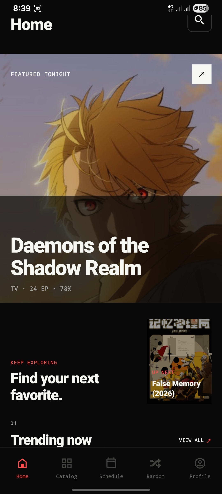
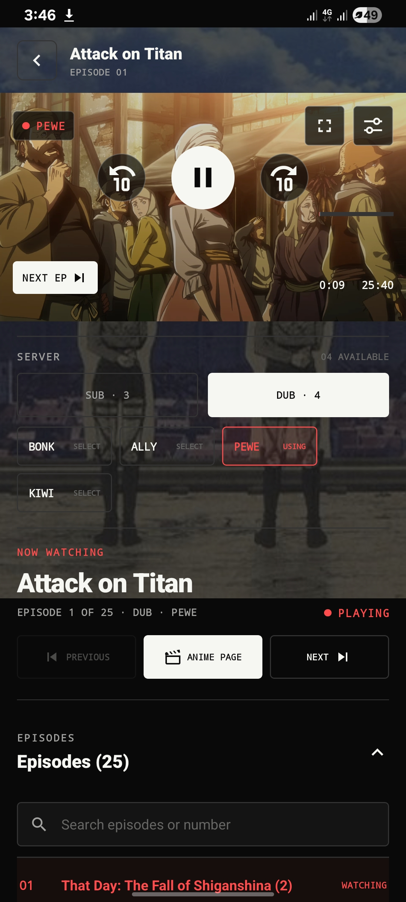
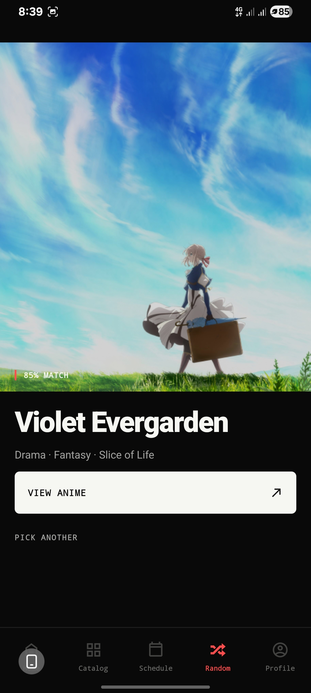
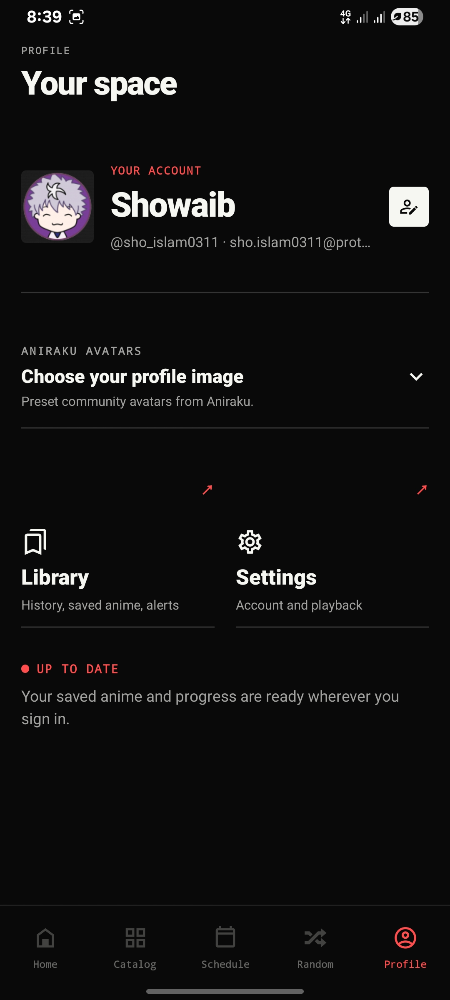
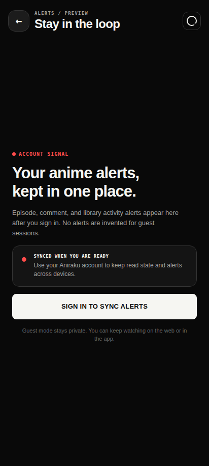

01 FOR YOU HOME

One clean continue-or-discover moment before the release rails begin.
NATIVE ANDROID / V2.5 / STABLE
Discovery, playback, and your library in one quiet native surface. Built for watching—not for fighting a website in a phone frame.

01 / THE EXPERIENCE
Six actual native renders from the public product. No conceptual mockups and no fabricated alert records.

One clean continue-or-discover moment before the release rails begin.
Poster-led discovery with the tools you need and none you do not.
Source, audio, skip, quality, and episode control stay close to the media.

When the list is too long, choose one title and begin.

A real signed-in capture of account identity, library presence, and native profile controls.

Guest mode stays private. Sign in to sync meaningful library and episode activity across sessions.
02 / THE PLAYER
Aniraku makes playback decisions visible. The player keeps your episode context while a source resolves, then gives advanced controls a deliberate place inside the media plane.
READ NATIVE ARCHITECTURE ↗Native media gets the first route. The Aniraku proxy assists when a compatible source needs recovery. An embed is the last verified path, not the default compromise.
History, bookmarks, ratings, comments, and in-app alerts stay close; connected AniList and MyAnimeList lists can be imported or exported deliberately.
03 / INSTALL THE SIGNAL
Current stable build: v2.5. It is a universal Android APK for Android 9 and later, with 32-bit and 64-bit ARM libraries.
04 / DIRECT ANSWERS
The short version for installation, migration, player behavior, library sync, and getting help.
Download the universal APK, open it from Android Downloads, and allow your browser or file manager to install unknown apps when Android asks. The build supports Android 9 and newer.
v2.5 uses aniraku.anime.app. If you used an older alpha with aniraku.anine.app, uninstall that legacy package first; Android treats it as a separate application.
Aniraku’s backend runs on a free cloud instance and source availability comes from third-party providers. Busy periods can make discovery slower; try another provider or lower the quality when a source is available.
Use the headphones control inside the player for audio and provider choices. Open the player settings control for available quality levels, Auto Next, Auto Skip, playback speed, and the Downloads glyph. The first eligible save asks Android to select a Downloads folder; then the highest verified direct quality is written there.
Sign in with your Aniraku account. In Settings, connect AniList or MyAnimeList through the protected browser flow, then use explicit Import or Export actions. Connected providers receive meaningful watch progress and rating summaries; provider passwords and tokens are never stored in the APK.
Open a clear report in the Aniraku-App issue tracker, including Android version, device model, episode context, and the selected source where safe to share.
05 / BUILT OPEN
Aniraku is distributed directly—there is no Play Store listing. The backend runs on a free cloud instance, so source discovery can take longer during high demand. A listed provider is never a promise of uninterrupted third-party availability.
Use Aniraku only for media you are authorized to access. Optional accounts use Supabase-backed sync; refer to the privacy and terms documents for the complete policy.